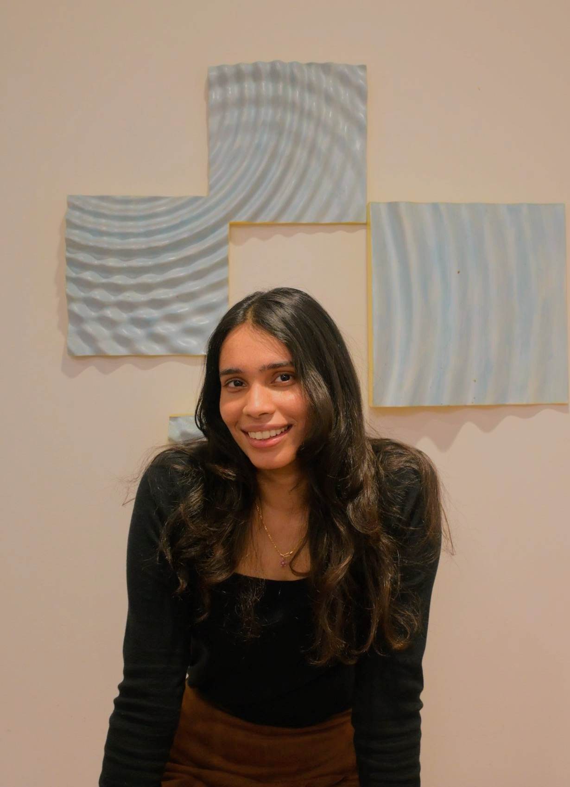
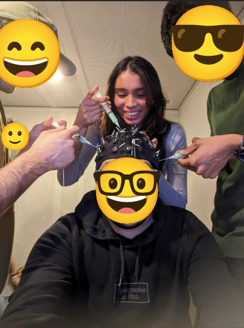
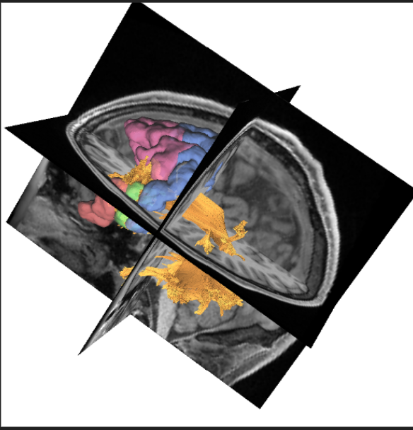
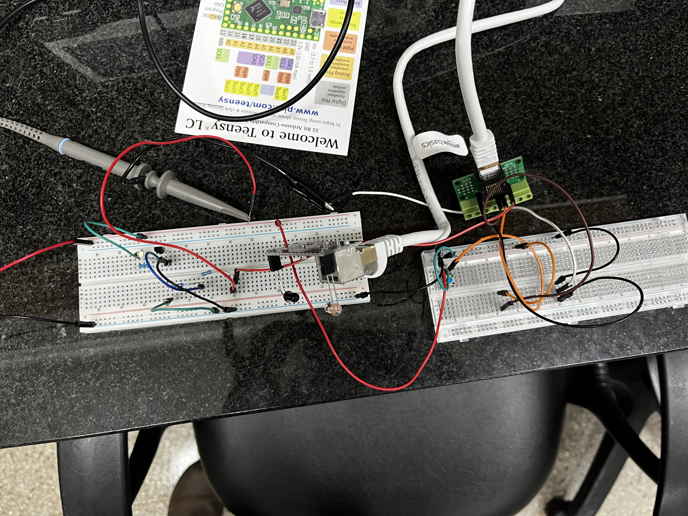
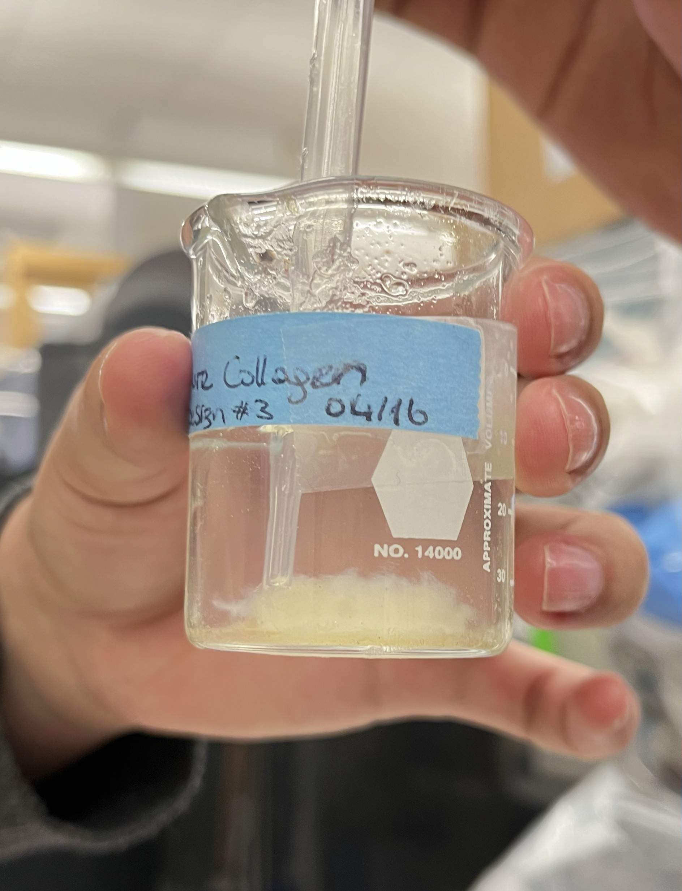
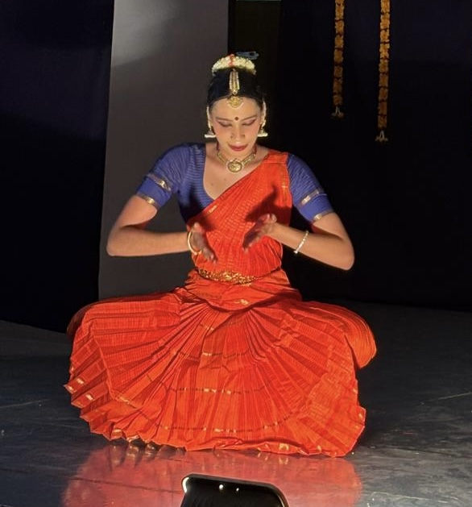
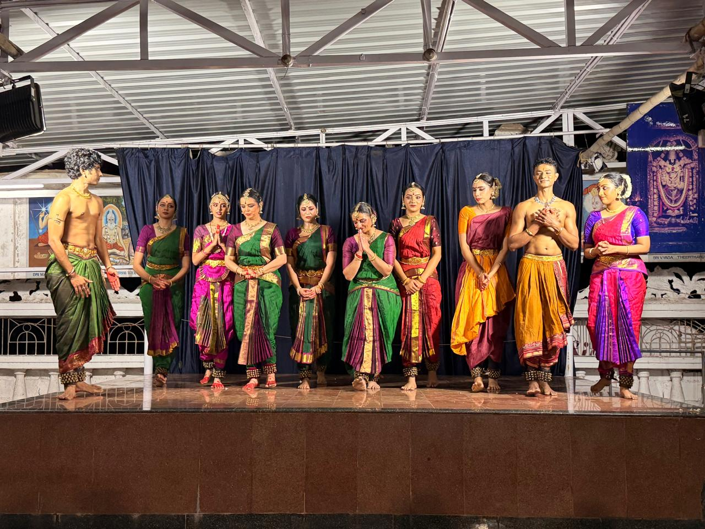
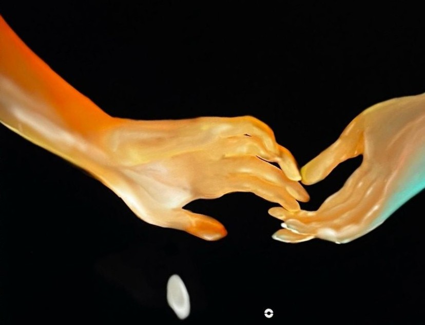
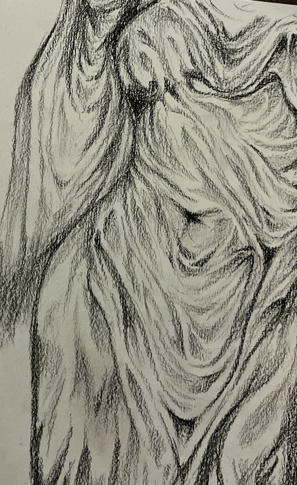

Vaaruni Suresh
neuroscience | engineering | classical dance
Writing
About me

I’m a neuroscientist and engineer who studies how brain networks change with age and disease, and I like building the tools that make that possible. Memory is central to everything I do: in the dance studio, where I love learning choreographies that are decades old and making them my own; in the lab, analysing neural data; and at my desk, writing essays on how lives are lived and remembered. You can find bits of each of these here, and I’d love to hear from you if any of them interest you. Get in touch.
My work has moved across scales, from regenerating Hydra to brain-computer interfaces, diffusion MRI of stroke, rat electrophysiology, and now EEG-fMRI in clinical populations.
Research
Research interests
Ageing, cognition and the senses
How sensory integration, region-specific activity and whole-brain networks change with age and disease.
Multimodal neuroimaging
Combining fMRI, EEG and diffusion MRI to study brain networks, and to inform brain-machine interfaces. I am also interested in minimally invasive methods of signal acquisition and brain stimulation.
Tools for neuroscience
Hardware and pipelines to measure the brain, from behavioural arenas and circuit boards to BCIs and EEG analysis.
From the lab




The details of my research experience and projects are on my CV.
Education
Education
BSc in Biology, minor in Data, Democracy and Development
Skills
Neuroimaging and EEG
Programming
Hardware
My teaching, mentoring and community work are on my CV.
The Arts
I’ve trained in classical ballet and Bharatanatyam for over fifteen years. Dance is where I learned discipline, patience and how to find artistry in repetition. I also make art sometimes.




Writing
Essays and fiction, mostly about memory and selfhood.
Essays
The Object and the Abject
Objects and shared memory in the construction of the self.
Field Notes of a Rememberer
What stories lose when they're retold
On Sad Stories and Self-Identity
Do sad stories help children build selves that don’t depend on reward?
Fiction
And then you’ll know
On observing grief and making it your own
Girl-mess!
Watching the other, watching the self.